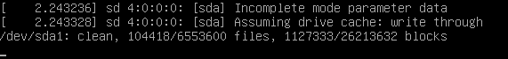
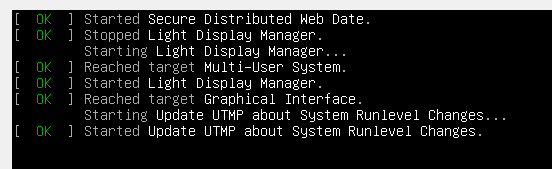

In the end of this issue https://forums.whonix.org/t/virtualbox-6-1-whonix-15-aborted/9178 I decided to return to virtualbox v5.2 and try to solve clipboard problem and I found out several mistakes.
If I try to import VM from Whonix-XFCE-15.0.0.9.4 distribute I get this screen when I try to start VM

at the same time If I try to import VM from Whonix-XFCE-15.0.0.4.9 distribute everything goes well and moreover clipboard works fine. Far more I have VM which I upgrated from Kernel v.14.19.0.5 (Whonix-XFCE-15.0.0.4.9 distribute) to Kernel v.14.19.0.8 (Whonix-XFCE-15.0.0.9.4 distribute) and of course clipboard doesn’t work. If I try to boot from Kernel v.14.19.0.5 in this VM I stuck in this screen  .
Something exactly goes wrong.
You should pay attention that import and clipboard works fine with VirtulBox 6.1 but there I faced with another so annoying problem which can’t allow to work normal - ABORTED!!
Could somebody help me to solve this problems?